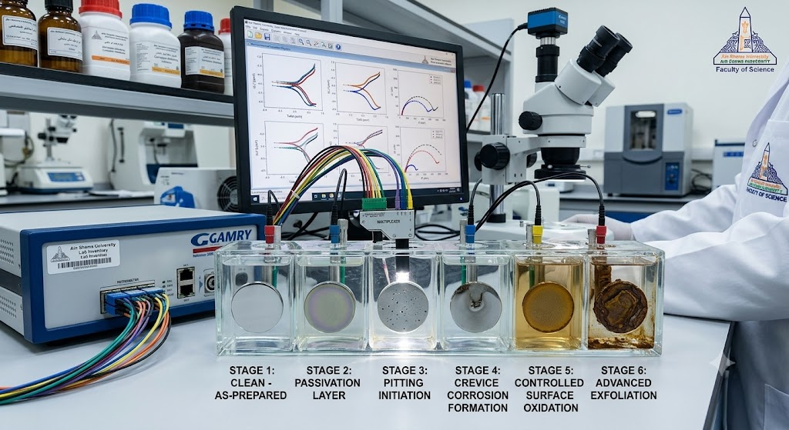
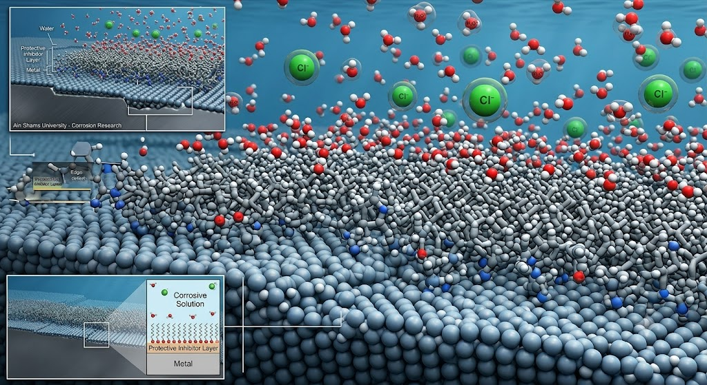
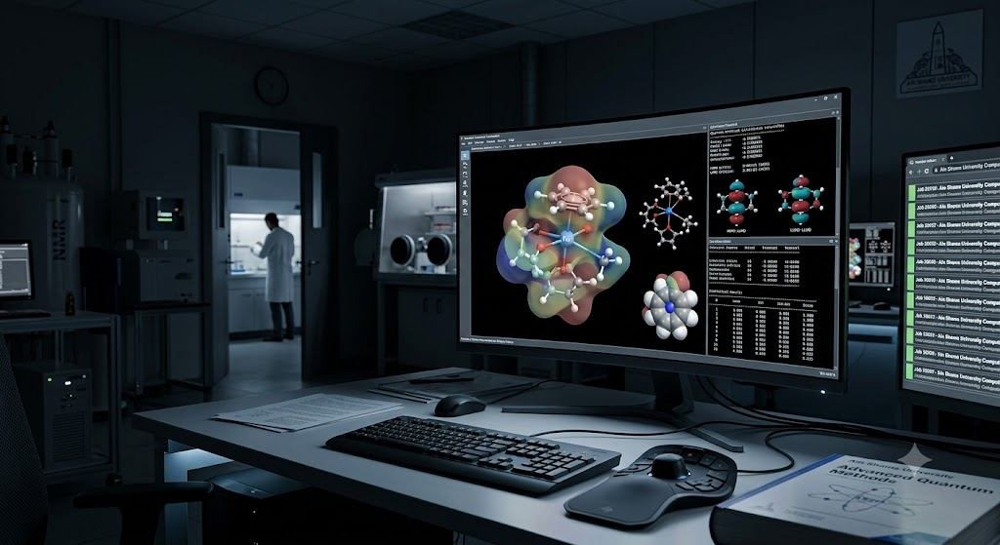
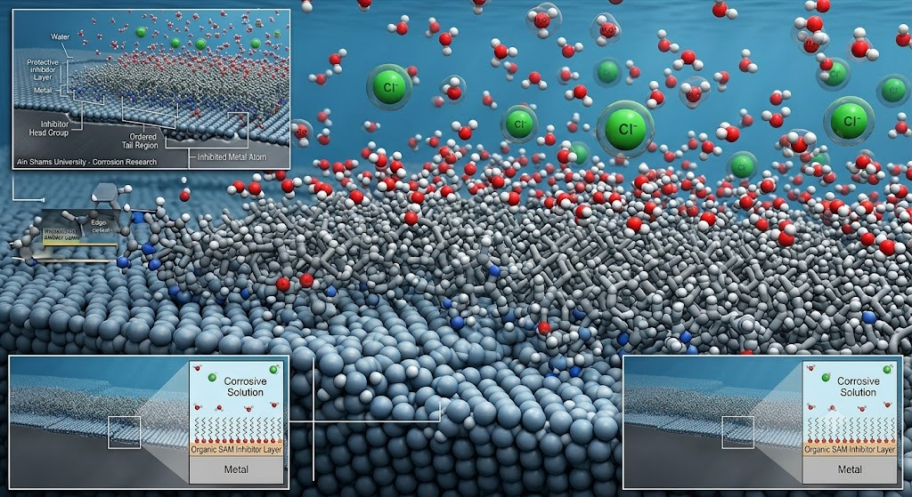

البحث العلمي والتخصصات البحثية Research & Scientific Expertise
فهم الظواهر الكهروكيميائية من التجربة إلى التفسير الجزيئي
يرتكز المسار البحثي للأستاذ الدكتور خالد فؤاد خالد على التكامل بين القياسات الكهروكيميائية والتحليل النظري والنمذجة الجزيئية، بهدف فهم آليات التآكل وسلوك المواد عند الأسطح البينية وتفسير كفاءة مثبطات التآكل على مستوى الجزيء والسطح.
Connecting Electrochemical Evidence with Molecular Interpretation
Prof. Khaled Fouad Khaled’s research integrates electrochemical experimentation with theoretical analysis and molecular modelling to examine corrosion mechanisms, interfacial material behaviour, and the molecular basis of corrosion-inhibitor performance.

الملف البحثيResearch Profile
النشاط البحثي والخبرة العلمية
Research Activity and Scientific Expertise
يُعد الأستاذ الدكتور خالد فؤاد خالد محمود أحد العلماء البارزين في مجالات الكيمياء الكهربية، وتآكل المعادن، وعلوم المواد، والكيمياء الحاسوبية. وقد ارتكز نشاطه العلمي على بناء فهم متكامل لعمليات التآكل، بدءًا من القياسات الكهروكيميائية والظواهر التي تحدث عند سطح المعدن، وصولًا إلى التفسير الجزيئي والإلكتروني لتفاعلات المعادن مع الأوساط المحيطة ومثبطات التآكل.
أسّس معمل الكيمياء الكهربية والتآكل بكلية التربية، جامعة عين شمس، بهدف دراسة آليات تآكل المعادن والسبائك في الأوساط المختلفة وتطوير استراتيجيات فعالة لحمايتها. كما أنشأ معمل النمذجة الجزيئية للتآكل، الذي يركز على توظيف الحسابات الكيميائية الكمية والمحاكاة الجزيئية وتحليل العلاقات بين البنية والنشاط لتفسير أداء المواد والتنبؤ بسلوك مثبطات التآكل تحت ظروف تشغيل متنوعة.
ويتميز نهجه البحثي بالجمع بين التجارب المعملية والنمذجة الحاسوبية؛ إذ عمل على دمج تقنيات الكيمياء الفيزيائية والكهروكيميائية مع الحسابات النظرية بهدف تفسير آليات الامتزاز والتثبيط والتفاعلات البينية على أسطح المعادن. وقد أسهم هذا التكامل في توجيه البحث نحو تصميم نظم أكثر كفاءة وأقل ضررًا على البيئة للحد من التآكل، وتقليل الاعتماد على المواد الكيميائية ذات التأثيرات البيئية والصحية غير المرغوبة.
وإلى جانب إنتاجه البحثي، أسّس الأستاذ الدكتور خالد مدرسة علمية رصينة بقسم الكيمياء في كلية التربية، وأسهم في إعداد وتأهيل أجيال من طلاب الماجستير والدكتوراه والباحثين في تخصصات الكيمياء الكهربية، وتآكل المعادن، وعلوم المواد، والكيمياء الحاسوبية، فضلًا عن دعم الدراسات البينية التي تجمع بين العمل التجريبي والتحليل النظري والتطبيق الصناعي.
وقد امتد نشاطه العلمي إلى عدد من المؤسسات والمراكز البحثية الدولية من خلال زيارات ومهمات علمية إلى مدينة ليل في فرنسا، وولاية تاميل نادو في الهند، وعدد من المدن والمؤسسات العلمية في الولايات المتحدة الأمريكية. وأسهمت هذه الخبرات في توسيع شبكات التعاون العلمي، وتبادل المعرفة، وعرض اتجاهاته البحثية في المحافل الأكاديمية الدولية.
وعلى المستوى التطبيقي، شارك في دراسة مشكلات صناعية وتقديم حلول واستشارات علمية لعدد من الجامعات والمؤسسات والشركات، من بينها شركتا سابك وأرامكو في المملكة العربية السعودية. كما أسّس بيت الخبرة بجامعة الطائف بهدف تعزيز التكامل بين الجامعة والقطاع الصناعي، وتطوير حلول مبتكرة للتحديات التقنية، ودعم البحث التطبيقي ونقل المعرفة والابتكار التكنولوجي بما يخدم التنمية الصناعية المستدامة.
وتعكس منشوراته العلمية تطورًا مستمرًا في دراسة تآكل المعادن وحمايتها، وقد شملت أبحاثًا تجريبية ونظرية ومراجعات علمية منشورة في دوريات دولية متخصصة، من بينها دراسة مرجعية منشورة في مجلة Coordination Chemistry Reviews.
كما نال عددًا من الجوائز والتكريمات المحلية والإقليمية والدولية تقديرًا لإسهاماته العلمية، ومنها جائزة الدولة التشجيعية في الكيمياء وتقدير مرتبط بمؤسسة ولش لأبحاث الكيمياء في ولاية تكساس. ووفقًا لسيرته العلمية، أُدرج اسمه ضمن قاعدة البيانات العلمية المعروفة بتصنيف أعلى 2% من العلماء عالميًا، والمبنية على مؤشرات استشهادية موحدة مستمدة من بيانات Scopus.
وتعكس هذه المسيرة تكامل أدواره بوصفه باحثًا وأستاذًا ومشرفًا ومستشارًا علميًا، كما تؤكد إسهامه في تطوير المعرفة الأساسية والتطبيقية في مجال التآكل، وبناء القدرات البحثية، وربط البحث الأكاديمي باحتياجات الصناعة والاستدامة والابتكار التكنولوجي.
Professor Khaled Fouad Khaled Mahmoud has developed a distinguished research profile in electrochemistry, corrosion science, materials science, and computational chemistry. His scientific work is founded on an integrated understanding of corrosion processes, extending from electrochemical measurements and metal-surface phenomena to the molecular and electronic interpretation of interactions among metals, corrosive environments, and corrosion inhibitors.
He established the Electrochemistry and Corrosion Laboratory at the Faculty of Education, Ain Shams University, to investigate the mechanisms governing the corrosion of metals and alloys under different environmental and operating conditions and to develop effective protection strategies. He also established a Molecular Modelling Laboratory for Corrosion, dedicated to applying quantum-chemical calculations, molecular simulations, and structure–activity analysis to explain material behaviour and predict the performance of corrosion inhibitors.
A central feature of Professor Khaled’s research is the integration of experimental electrochemistry with computational chemistry. His studies combine physical and electrochemical measurements with theoretical calculations to elucidate adsorption, inhibition, and interfacial reaction mechanisms at metal surfaces. This approach supports the rational design of more efficient and environmentally responsible corrosion-control systems while reducing dependence on hazardous chemical substances.
In parallel with his research production, Professor Khaled established a strong scientific school within the Department of Chemistry at the Faculty of Education. Through postgraduate supervision and research training, he has contributed to the development of generations of master’s and doctoral students and multidisciplinary researchers working across electrochemistry, corrosion science, materials science, computational chemistry, and related interdisciplinary fields.
His international academic activity has included scientific visits and research missions to Lille in France, Tamil Nadu in India, and several academic and research institutions in the United States. These activities have supported international knowledge exchange, the presentation of his research directions, and the development of collaborative scientific networks.
Professor Khaled has also applied his expertise to industrial and technological challenges. He contributed to the investigation of industrial problems and the provision of scientific consultation for universities, research institutions, and major companies, including SABIC and Saudi Aramco. At Taif University, he established a House of Expertise designed to strengthen cooperation between academia and industry, promote applied research and technology transfer, and develop innovative solutions to contemporary industrial challenges.
His publication record includes experimental, theoretical, and review studies addressing the mechanisms, monitoring, prediction, and inhibition of metallic corrosion. Among these contributions is a major reference review published in Coordination Chemistry Reviews.
His scientific achievements have also received local, regional, and international recognition, including the Egyptian State Encouragement Award in Chemistry and recognition associated with the Welch Foundation for chemical research in Texas. According to his academic biography, he has also been included in the science-wide database commonly known as the world’s top 2% scientists ranking, which is based on standardized Scopus citation indicators.
Together, these activities reflect an academic career that connects fundamental research, postgraduate education, international collaboration, industrial consultation, and technological innovation. They also demonstrate his continuing contribution to corrosion science, sustainable materials protection, research-capacity development, and the advancement of scientific and industrial innovation in Egypt and the wider Arab region.
تعذر التحقق المباشر من Google Scholar بتاريخ 24 يوليو 2026؛ لذلك استُخدمت القيم المرجعية المؤقتة الواردة في تعليمات التحديث. تتغير المؤشرات الاستشهادية بمرور الوقت؛ يُرجى الرجوع إلى الملف الرسمي للاطلاع على أحدث القيم الموثقة.
Direct Google Scholar verification was unavailable on 24 July 2026, so the supplied provisional reference values are displayed. Citation indicators change over time; please consult the official profile for the latest verified values.
عرض ملف Google Scholar المباشرView Live Google Scholar Profileالرؤية والرسالةResearch Vision & Mission
بحث يربط السطح بالمادة والجزيء
تركز الرؤية البحثية على فهم سلوك المعادن والسبائك في البيئات الكيميائية المختلفة، مع إيلاء اهتمام خاص للعمليات التي تحدث عند السطح الفاصل بين القطب والمحلول. ويُنظر إلى القياس التجريبي بوصفه نقطة البداية، ثم تُستخدم الأدوات الحسابية لتفسير النتائج وربطها بالخواص الإلكترونية والجزيئية للمركبات المدروسة.
وتتمثل الرسالة في بناء تفسير علمي متماسك يمكنه دعم اختيار وسائل الحماية المناسبة، وتقييم مثبطات التآكل، وفهم العوامل التي تتحكم في كفاءتها، بما يسهم في حماية المواد وإطالة عمرها التشغيلي دون تجاوز ما تثبته القياسات والوثائق العلمية.
Researching the Interface Between Surface, Material, and Molecule
The research vision centres on the behaviour of metals and alloys in chemically diverse environments, with particular emphasis on processes occurring at the electrode–electrolyte interface. Experimental evidence is treated as the foundation, while computational analysis is used to relate observed behaviour to the electronic and molecular properties of the compounds under study.
The mission is to develop a coherent scientific explanation that supports the evaluation of protection strategies and corrosion inhibitors, clarifies the factors governing their performance, and contributes to longer material service life without extending beyond verified evidence.
01
الملاحظة والقياس
Observation and Measurement
توصيف السلوك الكهروكيميائي وتحليل التغير في الجهد والتيار والممانعة.
Characterising electrochemical behaviour through potential, current, and impedance response.
02
التفسير الجزيئي
Molecular Interpretation
ربط كفاءة المركبات بتركيبها الإلكتروني والجزيئي وتفاعلها مع السطح.
Relating inhibitor performance to molecular structure, electronic properties, and surface interaction.
المحاور البحثيةCore Research Areas
تخصصات مترابطة ضمن إطار علمي واحد
تعمل المحاور الآتية بصورة تكاملية؛ فكل محور يضيف مستوى مختلفًا من الفهم، من القياس المخبري إلى التفسير الذري والجزيئي.
Interconnected Fields Within a Unified Research Framework
Each research area contributes a different level of understanding, from laboratory measurement to atomistic and molecular interpretation.
EC
الكيمياء الكهربية
Electrochemistry
دراسة انتقال الشحنة والتفاعلات عند سطح القطب وسلوك الأنظمة الكهروكيميائية.
Charge transfer, electrode-surface reactions, and the behaviour of electrochemical systems.
CS
علم التآكل
Corrosion Science
تحليل آليات التآكل والعوامل الكيميائية والحرارية والسطحية المؤثرة في معدله.
Mechanistic analysis of corrosion and the chemical, thermal, and surface factors that influence its rate.
MP
حماية المعادن والسبائك
Metals and Alloys Protection
تقييم وسائل الحد من التآكل وحماية الأسطح في الأوساط المختلفة.
Evaluation of approaches for reducing corrosion and protecting material surfaces.
CI
مثبطات التآكل
Corrosion Inhibitors
دراسة الامتزاز والعلاقة بين التركيب الجزيئي وكفاءة التثبيط.
Adsorption behaviour and structure–performance relationships in inhibition.
CC
الكيمياء الحاسوبية
Computational Chemistry
استخدام الحسابات الكيميائية الكمية لتفسير الخواص الإلكترونية والجزيئية.
Quantum-chemical analysis of electronic and molecular properties.
MM
النمذجة الجزيئية
Molecular Modelling
بناء نماذج تساعد على تفسير تفاعل الجزيئات مع الأسطح والوسط المحيط.
Models that clarify interactions among molecules, surfaces, and the surrounding medium.
MD
الديناميكا الجزيئية ومحاكاة مونت كارلو
Molecular Dynamics and Monte Carlo Simulation
تحليل التوزيع والحركة وطاقة الامتزاز والتفاعل مع السطح على المستوى الذري.
Atomistic analysis of distribution, motion, adsorption energy, and surface interaction.
QS
العلاقة بين البنية والكفاءة
Structure–Performance Relationships
مقارنة الواصفات الجزيئية بالنتائج التجريبية لفهم اتجاهات الكفاءة.
Comparing molecular descriptors with experimental trends to explain performance.

الكيمياء الكهربيةElectrochemistry
قراءة التفاعلات عند سطح القطب
تدرس الكيمياء الكهربية انتقال الإلكترونات والأيونات والتفاعلات التي تحدث عند سطح القطب، وهي الأساس التجريبي لفهم كثير من ظواهر التآكل والحماية. ويُستخدم جهد الدائرة المفتوحة (Open-Circuit Potential, OCP) لمتابعة استقرار النظام، بينما تساعد مطيافية الممانعة الكهروكيميائية (Electrochemical Impedance Spectroscopy, EIS) على تحليل مقاومة انتقال الشحنة وسلوك الطبقات السطحية.
كما يُستخدم الاستقطاب الجهدي الديناميكي (Potentiodynamic Polarization) لتقدير مؤشرات التآكل ودراسة السلوك الأنودي والكاثودي. وتُفسر نتائج هذه التقنيات مجتمعةً، بدل الاعتماد على قياس منفرد، للوصول إلى قراءة أكثر تماسكًا لسلوك المادة.
Interpreting Reactions at the Electrode Surface
Electrochemistry examines electron and ion transfer at the electrode surface and provides the experimental basis for understanding corrosion and protection. Open-Circuit Potential (OCP) is used to observe system stabilisation, while Electrochemical Impedance Spectroscopy (EIS) supports analysis of charge-transfer resistance and surface-film behaviour.
Potentiodynamic Polarization provides corrosion parameters and insight into anodic and cathodic processes. These measurements are interpreted together rather than in isolation, giving a more coherent description of material behaviour.
التآكل وحماية الموادCorrosion and Materials Protection
فهم العوامل التي تتحكم في فقد المادة
يتناول علم التآكل التغيرات الكيميائية والكهروكيميائية التي تؤدي إلى تدهور المعادن والسبائك. ويشمل التحليل تأثير تركيب الوسط، ودرجة الحرارة، وحالة السطح، وتركيب السبيكة، والظروف التشغيلية في سرعة التآكل ونمطه.
ويُستخدم هذا الفهم لتقييم وسائل الحماية ومقارنة كفاءة المثبطات والطبقات السطحية والظروف التي تقلل من النشاط التآكلي. وتظل النتائج مرتبطة بحدود النظام التجريبي وخواص المادة والوسط المستخدم.
Understanding the Factors that Govern Material Loss
Corrosion science examines the chemical and electrochemical processes that degrade metals and alloys. The analysis considers medium composition, temperature, surface condition, alloy chemistry, and operating conditions as factors affecting both corrosion rate and corrosion form.
This understanding supports the evaluation of protection methods, inhibitors, and surface films. Conclusions remain tied to the specific material, environment, and experimental boundaries of each study.


مثبطات التآكلCorrosion Inhibitors
من التركيب الجزيئي إلى كفاءة التثبيط
تركز دراسات مثبطات التآكل على قدرة الجزيئات على الوصول إلى السطح المعدني والامتزاز عليه، وتكوين حاجز يحد من التفاعلات المؤدية إلى التآكل. وتتأثر الكفاءة بالبنية الجزيئية، والمجموعات الوظيفية، وتوزيع الشحنة، وحجم الجزيء، وطبيعة الوسط والسطح.
وتشمل موضوعات السجل البحثي مركبات عضوية ومشتقات حلقية غير متجانسة ومواد ذات أصل طبيعي ومواد أخرى جرى تقييمها تجريبيًا ونظريًا. ويساعد الجمع بين القياسات العملية والتحليل الحسابي على التمييز بين مجرد الارتباط الإحصائي والتفسير المقترح لآلية الامتزاز.
From Molecular Structure to Inhibition Performance
Corrosion-inhibitor research examines how molecules reach and adsorb on metal surfaces, forming barriers that reduce corrosion reactions. Performance depends on molecular architecture, functional groups, charge distribution, molecular size, the environment, and the nature of the surface.
The documented research record includes organic compounds, heterocyclic derivatives, naturally derived materials, and other inhibitor classes. Combining experiment with computation helps distinguish statistical association from a scientifically supported adsorption mechanism.
الكيمياء الحاسوبيةComputational Chemistry
تفسير الخواص الإلكترونية والجزيئية
تستخدم الكيمياء الحاسوبية الحسابات الكيميائية الكمية لدراسة توزيع الإلكترونات، وطبيعة المدارات الجزيئية، ومناطق التفاعل المحتملة، والواصفات المرتبطة بالنشاط الكيميائي. ويمكن أن تشمل أدوات التحليل المدارات الجزيئية الحدّية (Frontier Molecular Orbitals)، وجهد السطح الكهروستاتيكي الجزيئي (Molecular Electrostatic Potential)، وواصفات التفاعلية الكلية والمحلية.
ويُستخدم منهج نظرية دالة الكثافة (Density Functional Theory, DFT) أو غيره من الحسابات الكمية عندما يكون موثقًا في الدراسة المنشورة. ولا تُعامل النتائج النظرية كبديل عن التجربة، بل كأداة تفسير ومقارنة تساعد على صياغة فرضيات قابلة للتحقق.
Interpreting Electronic and Molecular Properties
Computational chemistry uses quantum-chemical calculations to examine electron distribution, molecular orbitals, likely reactive regions, and descriptors associated with chemical behaviour. Relevant analyses may include Frontier Molecular Orbitals, Molecular Electrostatic Potential, and global or local reactivity descriptors.
Density Functional Theory (DFT), or another quantum method, is cited only where it is documented in the corresponding publication. Theoretical output is not treated as a substitute for experiment; it is used to interpret evidence, compare compounds, and formulate testable explanations.


النمذجة والمحاكاةMolecular Modelling and Simulation
دراسة الامتزاز على المستوى الذري
تساعد النمذجة الجزيئية على دراسة تفاعل جزيئات المثبط مع السطح المعدني والماء والأيونات الموجودة في الوسط. وتتيح محاكاة الديناميكا الجزيئية (Molecular Dynamics Simulation) متابعة الحركة والتوزيع والتآثرات بمرور الزمن، بينما تساعد محاكاة مونت كارلو (Monte Carlo Simulation) على البحث عن أوضاع امتزاز مناسبة ومقارنة طاقات التفاعل.
وتُستخدم طاقة الامتزاز وتفاعلات السطح–الجزيء لتفسير الاتجاهات التجريبية، مع مراعاة أن نتائج المحاكاة تعتمد على النموذج المستخدم، ونوع السطح، وقوة المجال، وتركيب الوسط، وليست دليلًا منفردًا على الآلية.
Examining Adsorption at the Atomic Scale
Molecular modelling explores interactions among inhibitor molecules, metal surfaces, water, and dissolved ions. Molecular Dynamics Simulation follows motion and interaction over time, while Monte Carlo Simulation searches for favourable adsorption configurations and enables comparison of interaction energies.
Adsorption energy and surface–molecule interactions help interpret experimental trends. Simulation results remain dependent on the selected model, surface, force field, and environmental composition, and are therefore not treated as stand-alone proof of mechanism.
التكامل والتطبيقResearch Integration and Application
من القياس التجريبي إلى التفسير والتطبيق
يجمع هذا المسار البحثي بين القياسات الكهروكيميائية، وتحليل السطح، والحسابات الكيميائية الكمية، والنمذجة الجزيئية لبناء تفسير متكامل لسلوك المواد وآليات الحماية من التآكل.
From Experimental Measurement to Interpretation and Application
This research pathway integrates electrochemical measurement, surface analysis, quantum-chemical calculations, and molecular modelling to develop a coherent account of material behaviour and corrosion-protection mechanisms.
01
التكامل التجريبي–الحسابي
Experimental–Computational Integration
تُستخدم النتائج الحسابية لتفسير الاتجاهات التجريبية ومقارنة المركبات وصياغة تفسيرات قابلة للاختبار، دون اعتبارها بديلًا عن القياس.
Computational results are used to interpret experimental trends, compare compounds, and formulate testable explanations rather than replace measurement.
02
التطبيقات الصناعية
Industrial Applications
يمتد توظيف الخبرة العلمية إلى مشكلات التآكل وحماية المواد والاستشارات المرتبطة باختيار أنظمة الحماية وتقييم الأداء.
Scientific expertise is applied to corrosion challenges, materials protection, and consultation related to protection-system selection and performance assessment.
03
الإشراف وبناء القدرات
Supervision and Capacity Building
يدعم الإشراف على طلاب الدراسات العليا والباحثين تنمية المهارات في الكيمياء الكهربية، والتآكل، وعلوم المواد، والكيمياء الحاسوبية.
Postgraduate supervision and researcher development strengthen capabilities in electrochemistry, corrosion, materials science, and computational chemistry.
04
الاتجاهات البحثية المستقبلية
Future Research Directions
تتجه الأولويات نحو أنظمة حماية أكثر كفاءة ومسؤولية بيئيًا، مع تعميق الربط بين توصيف السطح والتجربة والنمذجة الجزيئية.
Priorities focus on more efficient and environmentally responsible protection systems, with deeper integration of surface characterisation, experiment, and molecular modelling.